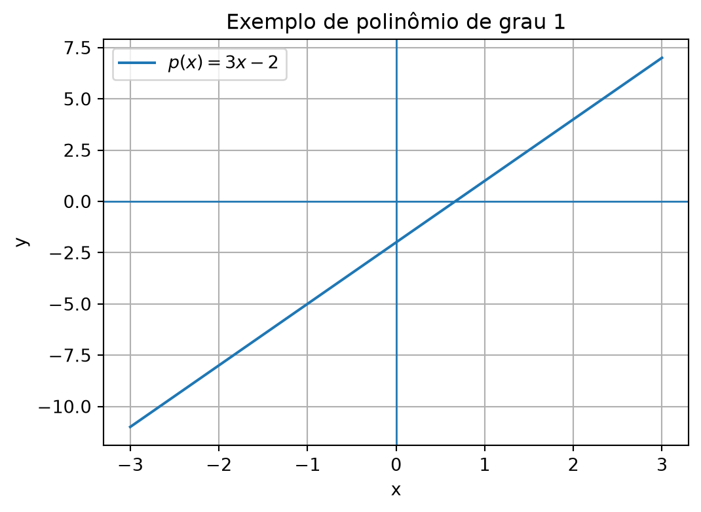
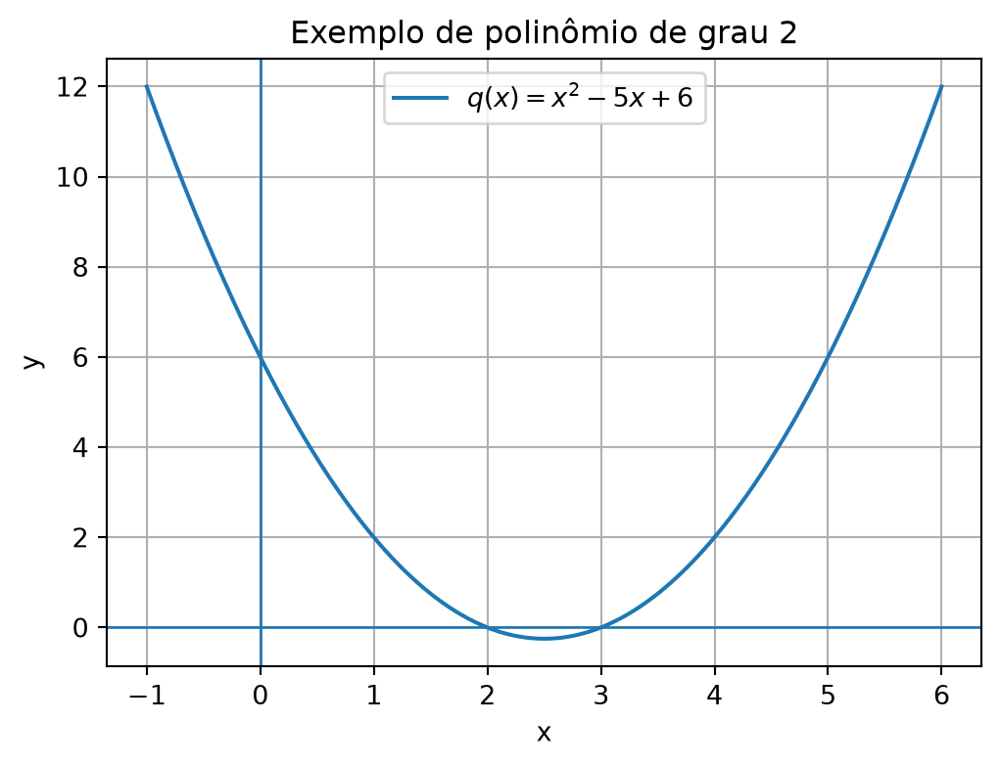
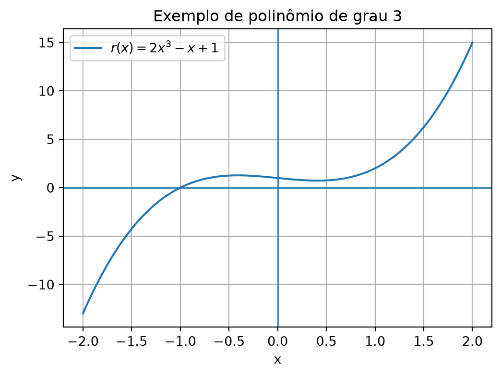
Blog do Marcellini
4 de junho de 2026
🏠 ← Sumário do Curso · ← Cursos de Matemática · ← Seção de Matemática
🎯 Post Anterior: 👉 1.6 Funções Elementares
Como os polinômios e quocientes de polinômios ajudam a compreender zeros, sinais, descontinuidades e assíntotas?
Entre as funções elementares, duas famílias aparecem continuamente no Cálculo: as funções polinomiais e as funções racionais.
As funções polinomiais são construídas a partir de somas de potências inteiras não negativas de \(x\). As funções racionais são quocientes de polinômios.
Essas duas famílias são importantes porque combinam simplicidade algébrica com grande riqueza gráfica. Elas permitem discutir zeros, sinais, crescimento, domínio, continuidade, assíntotas e comportamento no infinito.
Uma função polinomial tem a forma
\[ \boxed{ p(x)=a_nx^n+a_{n-1}x^{n-1}+\cdots+a_1x+a_0 } \]
em que os coeficientes
\[ a_0,a_1,\ldots,a_n\in\mathbb{R} \]
e
\[ a_n\neq 0. \]
O número \(n\) é chamado de grau do polinômio.
Exemplos:
\[ p(x)=3x-2 \]
é um polinômio de grau \(1\).
\[ q(x)=x^2-5x+6 \]
é um polinômio de grau \(2\).
\[ r(x)=2x^3-x+1 \]
é um polinômio de grau \(3\).
Os gráficos abaixo ajudam a visualizar esses três exemplos de funções polinomiais de graus diferentes.



import os
import numpy as np
import matplotlib.pyplot as plt
os.makedirs("images", exist_ok=True)
# Exemplo 1
x = np.linspace(-3, 3, 400)
plt.figure(figsize=(6, 4.2))
plt.axhline(0, linewidth=1)
plt.axvline(0, linewidth=1)
plt.plot(x, 3*x - 2, label=r"$p(x)=3x-2$")
plt.title("Exemplo de polinômio de grau 1")
plt.xlabel("x")
plt.ylabel("y")
plt.grid(True)
plt.legend()
plt.savefig("images/1-7-polinomio-grau-1.png", dpi=300, bbox_inches="tight")
plt.show()
# Exemplo 2
x = np.linspace(-1, 6, 500)
plt.figure(figsize=(6, 4.2))
plt.axhline(0, linewidth=1)
plt.axvline(0, linewidth=1)
plt.plot(x, x**2 - 5*x + 6, label=r"$q(x)=x^2-5x+6$")
plt.title("Exemplo de polinômio de grau 2")
plt.xlabel("x")
plt.ylabel("y")
plt.grid(True)
plt.legend()
plt.savefig("images/1-7-polinomio-grau-2.png", dpi=300, bbox_inches="tight")
plt.show()
# Exemplo 3
x = np.linspace(-2, 2, 500)
plt.figure(figsize=(6, 4.2))
plt.axhline(0, linewidth=1)
plt.axvline(0, linewidth=1)
plt.plot(x, 2*x**3 - x + 1, label=r"$r(x)=2x^3-x+1$")
plt.title("Exemplo de polinômio de grau 3")
plt.xlabel("x")
plt.ylabel("y")
plt.grid(True)
plt.legend()
plt.savefig("images/1-7-polinomio-grau-3.png", dpi=300, bbox_inches="tight")
plt.show()Toda função polinomial real está definida para todo número real.
Assim, se
\[ p(x)=x^4-3x^2+1, \]
então
\[ D_p=\mathbb{R}. \]
Isso acontece porque as operações que formam um polinômio — soma, subtração, multiplicação e potências inteiras não negativas — fazem sentido para qualquer \(x\in\mathbb{R}\).
Funções polinomiais não têm restrições de domínio nos reais.
Os zeros (ou raízes) de uma função polinomial são os valores de \(x\) para os quais
\[ \boxed{p(x)=0}. \]
Por exemplo, considere
\[ p(x)=x^2-5x+6. \]
Fatorando,
\[ p(x)=(x-2)(x-3). \]
Logo, os zeros são
\[ x=2 \]
e
\[ x=3. \]
Graficamente, os zeros são os pontos onde o gráfico corta ou toca o eixo horizontal.
Quando um polinômio de grau \(2\) tem raízes \(x_1\) e \(x_2\), podemos escrevê-lo na forma
\[ p(x)=a(x-x_1)(x-x_2), \]
em que \(a\) é o coeficiente dominante, isto é, o coeficiente do termo de maior grau.
No exemplo
\[ p(x)=x^2-5x+6, \]
as raízes são \(2\) e \(3\), e como o coeficiente de \(x^2\) é \(1\), temos
\[ p(x)=(x-2)(x-3). \]
Se o polinômio fosse, por exemplo,
\[ 2x^2-10x+12, \]
então a fatoração seria
\[ 2(x-2)(x-3). \]
A imagem abaixo mostra graficamente como os zeros aparecem como interseções com o eixo \(x\).
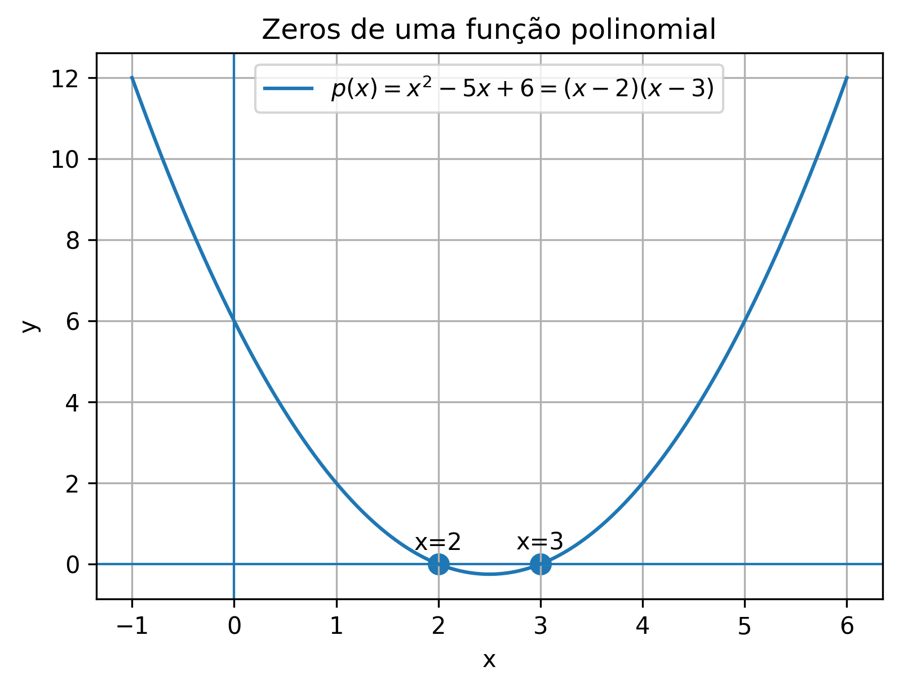
Depois de encontrar os zeros, podemos estudar em quais intervalos a função é positiva ou negativa.
Para
\[ p(x)=(x-2)(x-3), \]
os zeros \(2\) e \(3\) dividem a reta em três intervalos:
\[ (-\infty,2),\qquad (2,3),\qquad (3,+\infty). \]
Analisando o sinal:
Esse tipo de análise será essencial quando estudarmos crescimento, concavidade e esboço de gráficos.
O gráfico a seguir destaca as raízes \(x=2\) e \(x=3\) e indica o sinal da função em cada subintervalo.
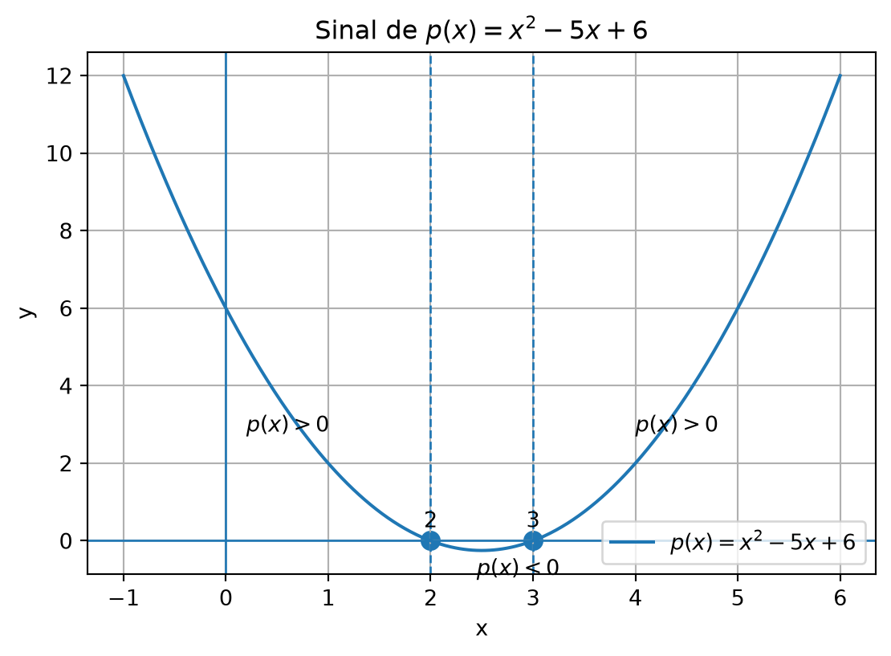
import os
import numpy as np
import matplotlib.pyplot as plt
os.makedirs("images", exist_ok=True)
x = np.linspace(-1, 6, 500)
y = x**2 - 5*x + 6
plt.figure(figsize=(6.6, 4.4))
plt.axhline(0, linewidth=1)
plt.axvline(0, linewidth=1)
plt.plot(x, y, label=r"$p(x)=x^2-5x+6$")
plt.scatter([2, 3], [0, 0], s=70)
plt.axvline(2, linestyle="--", linewidth=1)
plt.axvline(3, linestyle="--", linewidth=1)
plt.text(0.2, 2.8, r"$p(x)>0$")
plt.text(2.45, -0.9, r"$p(x)<0$")
plt.text(4.0, 2.8, r"$p(x)>0$")
plt.text(2, 0.35, "2", ha="center")
plt.text(3, 0.35, "3", ha="center")
plt.title("Sinal de $p(x)=x^2-5x+6$")
plt.xlabel("x")
plt.ylabel("y")
plt.grid(True)
plt.legend()
plt.savefig("images/1-7-sinal-polinomio.png", dpi=300, bbox_inches="tight")
plt.show()Até aqui, estudamos funções formadas por somas e produtos de potências de \(x\). Agora vamos dar um passo adiante: estudar quocientes de polinômios.
Essa mudança parece pequena, mas traz uma novidade importante: o denominador pode ser zero. É daí que surgem restrições de domínio, buracos e assíntotas.
Uma função racional é uma função da forma
\[ \boxed{ f(x)=\frac{p(x)}{q(x)},\qquad q(x)\neq 0 } \]
em que \(p(x)\) e \(q(x)\) são polinômios.
Antes de estudar qualquer função racional, a primeira pergunta deve ser:
\[ \boxed{q(x)\neq 0?} \]
Ou seja: quais valores tornam o denominador zero e precisam ser excluídos do domínio?
Exemplos:
\[ f(x)=\frac{1}{x}, \]
\[ g(x)=\frac{x+1}{x-2}, \]
\[ h(x)=\frac{x^2-1}{x^2-4}. \]
As funções racionais aparecem naturalmente quando dividimos grandezas, modelamos taxas médias ou estudamos expressões algébricas com denominadores variáveis.
Os exemplos a seguir mostram alguns gráficos típicos de funções racionais básicas.
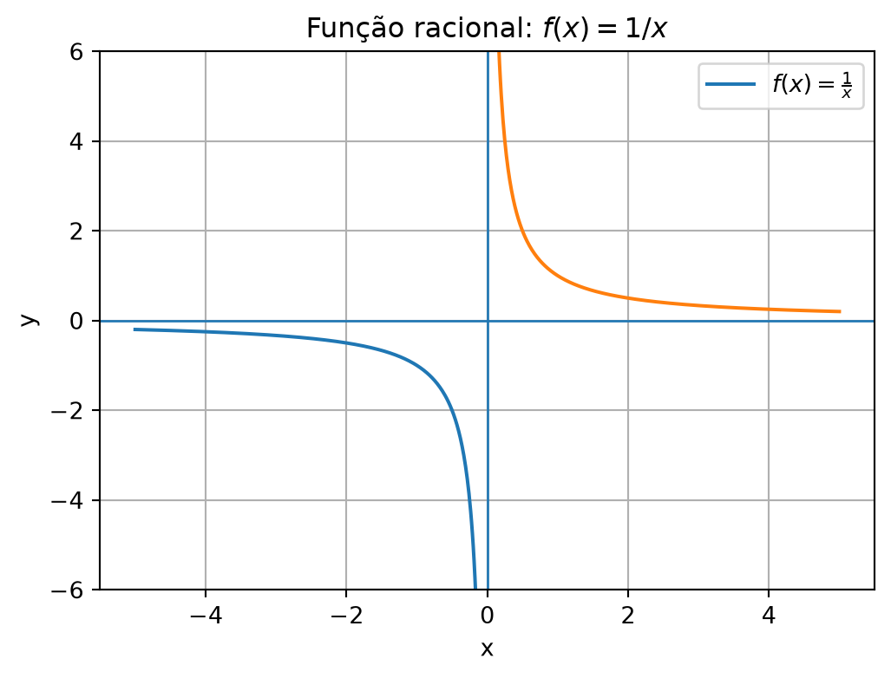
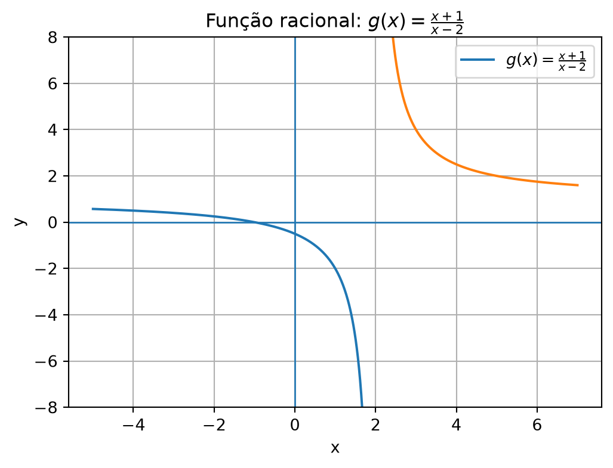
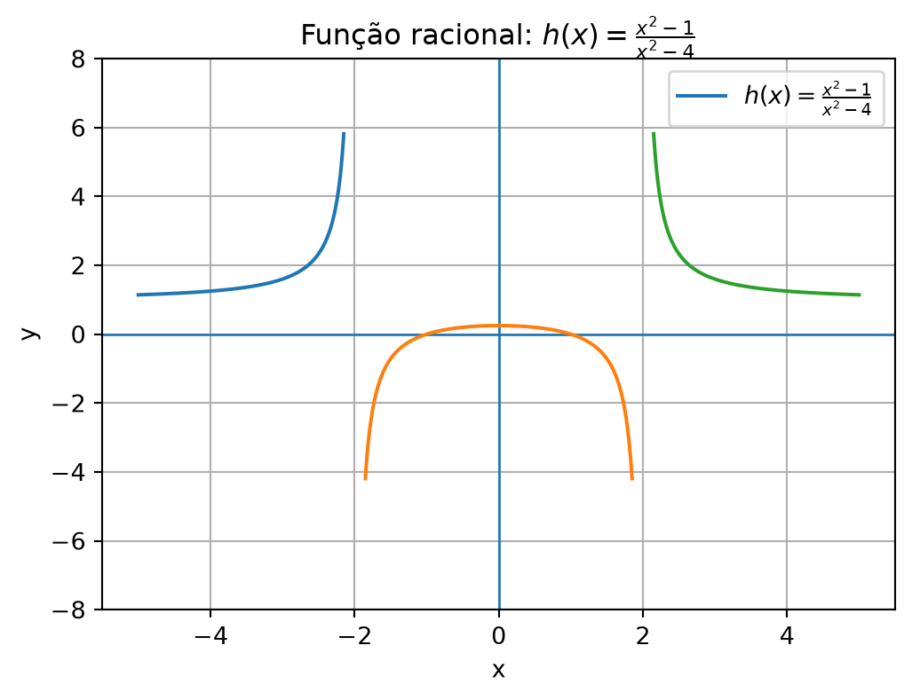
import os
import numpy as np
import matplotlib.pyplot as plt
os.makedirs("images", exist_ok=True)
# Exemplo 1: f(x)=1/x
x1 = np.linspace(-5, -0.15, 400)
x2 = np.linspace(0.15, 5, 400)
plt.figure(figsize=(6, 4.2))
plt.axhline(0, linewidth=1)
plt.axvline(0, linewidth=1)
plt.plot(x1, 1/x1, label=r"$f(x)=\frac{1}{x}$")
plt.plot(x2, 1/x2)
plt.title("Função racional: $f(x)=1/x$")
plt.xlabel("x")
plt.ylabel("y")
plt.ylim(-6, 6)
plt.grid(True)
plt.legend()
plt.savefig("images/1-7-racional-1-sobre-x.png", dpi=300, bbox_inches="tight")
plt.show()
# Exemplo 2: g(x)=(x+1)/(x-2)
x1 = np.linspace(-5, 1.85, 500)
x2 = np.linspace(2.15, 7, 500)
plt.figure(figsize=(6, 4.2))
plt.axhline(0, linewidth=1)
plt.axvline(0, linewidth=1)
plt.plot(x1, (x1+1)/(x1-2), label=r"$g(x)=\frac{x+1}{x-2}$")
plt.plot(x2, (x2+1)/(x2-2))
plt.title("Função racional: $g(x)=\\frac{x+1}{x-2}$")
plt.xlabel("x")
plt.ylabel("y")
plt.ylim(-8, 8)
plt.grid(True)
plt.legend()
plt.savefig("images/1-7-racional-x-mais-1-sobre-x-menos-2.png", dpi=300, bbox_inches="tight")
plt.show()
# Exemplo 3: h(x)=(x^2-1)/(x^2-4)
x1 = np.linspace(-5, -2.15, 400)
x2 = np.linspace(-1.85, 1.85, 400)
x3 = np.linspace(2.15, 5, 400)
plt.figure(figsize=(6, 4.2))
plt.axhline(0, linewidth=1)
plt.axvline(0, linewidth=1)
plt.plot(x1, (x1**2 - 1)/(x1**2 - 4), label=r"$h(x)=\frac{x^2-1}{x^2-4}$")
plt.plot(x2, (x2**2 - 1)/(x2**2 - 4))
plt.plot(x3, (x3**2 - 1)/(x3**2 - 4))
plt.title("Função racional: $h(x)=\\frac{x^2-1}{x^2-4}$")
plt.xlabel("x")
plt.ylabel("y")
plt.ylim(-8, 8)
plt.grid(True)
plt.legend()
plt.savefig("images/1-7-racional-x2-menos-1-sobre-x2-menos-4.png", dpi=300, bbox_inches="tight")
plt.show()O domínio de uma função racional exclui os valores que anulam o denominador.
Por exemplo, para
\[ f(x)=\frac{x+1}{x-2}, \]
precisamos de
\[ x-2\neq 0. \]
Logo,
\[ x\neq 2. \]
Assim,
\[ D_f=(-\infty,2)\cup(2,+\infty). \]
Para
\[ g(x)=\frac{x^2-1}{x^2-4}, \]
temos
\[ x^2-4=(x-2)(x+2). \]
Portanto, o denominador zera em
\[ x=-2 \]
e
\[ x=2. \]
Logo,
\[ D_g=(-\infty,-2)\cup(-2,2)\cup(2,+\infty). \]
Considere
\[ f(x)=\frac{x^2-1}{x-1}. \]
Como
\[ x^2-1=(x-1)(x+1), \]
podemos escrever
\[ f(x)=\frac{(x-1)(x+1)}{x-1}. \]
Para \(x\neq 1\), podemos cancelar o fator \(x-1\) e obter
\[ f(x)=x+1. \]
Mas é muito importante observar:
O cancelamento simplifica a expressão, mas não recupera o ponto excluído do domínio original, isto é, o ponto em que a função não está definida.
A função original não está definida em \(x=1\). Portanto,
\[ D_f=(-\infty,1)\cup(1,+\infty). \]
O gráfico coincide com a reta \(y=x+1\), exceto por um buraco no ponto correspondente a \(x=1\).
O gráfico abaixo mostra exatamente essa situação: a expressão simplificada parece uma reta, mas a função original mantém uma descontinuidade removível em \(x=1\).
Portanto, o cancelamento muda a aparência algébrica da expressão, mas não muda o domínio da função original.
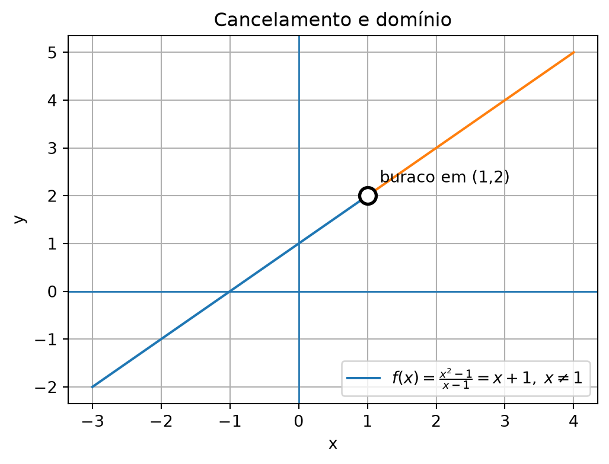
import os
import numpy as np
import matplotlib.pyplot as plt
os.makedirs("images", exist_ok=True)
x1 = np.linspace(-3, 0.95, 300)
x2 = np.linspace(1.05, 4, 300)
plt.figure(figsize=(6, 4.2))
plt.axhline(0, linewidth=1)
plt.axvline(0, linewidth=1)
plt.plot(x1, x1 + 1, label=r"$f(x)=\frac{x^2-1}{x-1}=x+1,\; x\neq 1$")
plt.plot(x2, x2 + 1)
plt.scatter([1], [2], s=110, facecolors='white', edgecolors='black', linewidths=2.0, zorder=5)
plt.text(1.18, 2.28, "buraco em (1,2)")
plt.title("Cancelamento e domínio")
plt.xlabel("x")
plt.ylabel("y")
plt.grid(True)
plt.legend()
plt.savefig("images/1-7-cancelamento-buraco.png", dpi=300, bbox_inches="tight")
plt.show()Um fator cancelado pode gerar um buraco no gráfico.
Um fator que permanece no denominador pode gerar uma assíntota vertical.
Uma assíntota vertical pode aparecer quando o denominador de uma função racional se aproxima de zero e a função cresce sem limite em valor absoluto.
Por exemplo:
\[ f(x)=\frac{1}{x-2}. \]
O domínio exclui \(x=2\).
Quando \(x\) se aproxima de \(2\), o denominador se aproxima de zero. A função pode assumir valores muito grandes positivos ou negativos.
Por isso, a reta
\[ x=2 \]
é uma assíntota vertical.
No estudo de limites, voltaremos a esse fenômeno com mais precisão.
O gráfico abaixo mostra a função e a assíntota vertical \(x=2\).
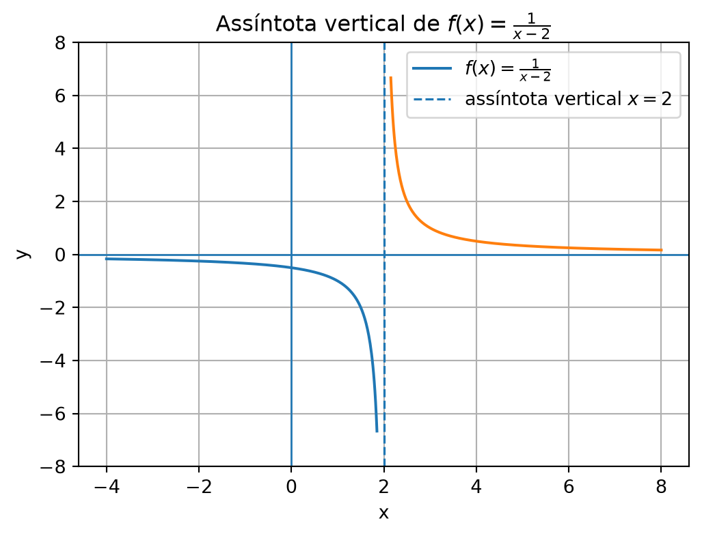
import os
import numpy as np
import matplotlib.pyplot as plt
os.makedirs("images", exist_ok=True)
x1 = np.linspace(-4, 1.85, 400)
x2 = np.linspace(2.15, 8, 400)
plt.figure(figsize=(6, 4.2))
plt.axhline(0, linewidth=1)
plt.axvline(0, linewidth=1)
plt.plot(x1, 1/(x1 - 2), label=r"$f(x)=\frac{1}{x-2}$")
plt.plot(x2, 1/(x2 - 2))
plt.axvline(2, linestyle="--", linewidth=1.2, label=r"assíntota vertical $x=2$")
plt.title("Assíntota vertical de $f(x)=\\frac{1}{x-2}$")
plt.xlabel("x")
plt.ylabel("y")
plt.ylim(-8, 8)
plt.grid(True)
plt.legend()
plt.savefig("images/1-7-assintota-vertical.png", dpi=300, bbox_inches="tight")
plt.show()Funções racionais também têm comportamento interessante quando \(x\) cresce indefinidamente.
Considere
\[ f(x)=\frac{2x+1}{x-3}. \]
Para valores muito grandes de \(x\), os termos dominantes são \(2x\) no numerador e \(x\) no denominador. Assim, a função se comporta aproximadamente como
\[ \frac{2x}{x}=2. \]
Isso sugere que, quando \(x\) vai para \(+\infty\) ou \(-\infty\), o gráfico se aproxima da reta horizontal
\[ y=2. \]
Essa reta é chamada de assíntota horizontal.
No gráfico abaixo, incluímos tanto a assíntota vertical quanto a assíntota horizontal para visualizar melhor o comportamento da função.
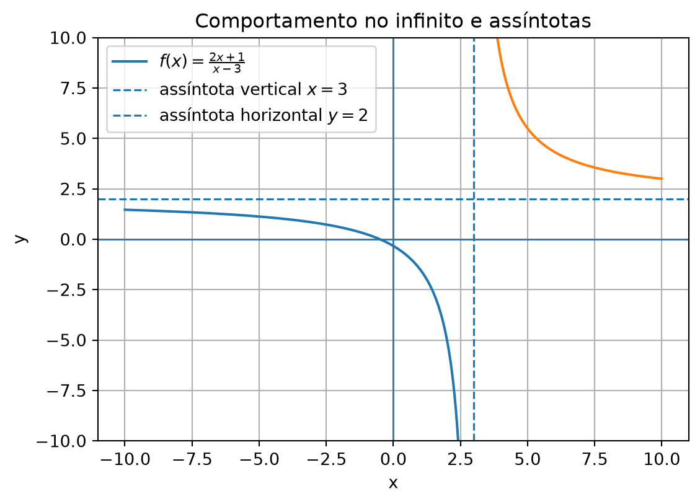
import os
import numpy as np
import matplotlib.pyplot as plt
os.makedirs("images", exist_ok=True)
x1 = np.linspace(-10, 2.85, 500)
x2 = np.linspace(3.15, 10, 500)
plt.figure(figsize=(6.4, 4.4))
plt.axhline(0, linewidth=1)
plt.axvline(0, linewidth=1)
plt.plot(x1, (2*x1 + 1)/(x1 - 3), label=r"$f(x)=\frac{2x+1}{x-3}$")
plt.plot(x2, (2*x2 + 1)/(x2 - 3))
plt.axvline(3, linestyle="--", linewidth=1.2, label=r"assíntota vertical $x=3$")
plt.axhline(2, linestyle="--", linewidth=1.2, label=r"assíntota horizontal $y=2$")
plt.title("Comportamento no infinito e assíntotas")
plt.xlabel("x")
plt.ylabel("y")
plt.ylim(-10, 10)
plt.grid(True)
plt.legend()
plt.savefig("images/1-7-comportamento-infinito.png", dpi=300, bbox_inches="tight")
plt.show()Funções polinomiais e racionais são importantes porque:
Antes de estudar limites formalmente, é essencial estar confortável com essas funções.
| Situação | O que observar | Efeito no gráfico |
|---|---|---|
| Polinômio | Grau, zeros e coeficiente dominante | Curva contínua, sem restrições de domínio |
| Zero de polinômio | \(p(x)=0\) | Interseção com o eixo \(x\) |
| Função racional | Denominador \(q(x)\neq 0\) | Pode ter restrições de domínio |
| Fator cancelado | Fator comum no numerador e denominador | Pode gerar buraco |
| Fator não cancelado no denominador | Denominador zera | Pode gerar assíntota vertical |
| Graus do numerador e denominador | Termos dominantes | Indicam comportamento no infinito |
Determine o grau dos polinômios:
Encontre os zeros das funções polinomiais:
Determine o domínio real das funções racionais:
Simplifique a expressão, indicando a restrição de domínio:
\[ f(x)=\frac{x^2-4}{x-2}. \]
Determine os intervalos em que
\[ p(x)=x^2-3x+2 \]
é positiva e negativa.
\(p(x)=4x^3-2x+1\) tem grau \(3\).
\(q(x)=7x-5\) tem grau \(1\).
\(r(x)=x^5+x^2-1\) tem grau \(5\).
\(s(x)=9\) é um polinômio constante, de grau \(0\), desde que a constante seja não nula.
\(p(x)=x^2-4=(x-2)(x+2)\). Logo, os zeros são \(x=-2\) e \(x=2\).
\(q(x)=x^2-3x+2=(x-1)(x-2)\). Logo, os zeros são \(x=1\) e \(x=2\).
\(r(x)=x(x-5)\). Logo, os zeros são \(x=0\) e \(x=5\).
Para \(f(x)=\dfrac{1}{x-4}\), precisamos de \(x-4\neq 0\), isto é, \(x\neq 4\). Logo, \(D_f=(-\infty,4)\cup(4,+\infty)\).
Para \(g(x)=\dfrac{x+1}{x^2-9}\), precisamos de \(x^2-9\neq 0\). Como \(x^2-9=(x-3)(x+3)\), temos \(x\neq -3\) e \(x\neq 3\). Logo, \(D_g=(-\infty,-3)\cup(-3,3)\cup(3,+\infty)\).
Para \(h(x)=\dfrac{x^2-1}{x-1}\), precisamos de \(x-1\neq 0\), isto é, \(x\neq 1\). Mesmo que haja cancelamento algébrico, o domínio da expressão original exclui \(1\). Logo, \(D_h=(-\infty,1)\cup(1,+\infty)\).
Temos:
\[ f(x)=\frac{x^2-4}{x-2}. \]
Como
\[ x^2-4=(x-2)(x+2), \]
obtemos
\[ f(x)=\frac{(x-2)(x+2)}{x-2}. \]
Para \(x\neq 2\), podemos cancelar \(x-2\):
\[ f(x)=x+2. \]
A restrição é
\[ x\neq 2. \]
Portanto, a expressão simplificada é \(x+2\), mas o domínio original é
\[ (-\infty,2)\cup(2,+\infty). \]
Temos
\[ p(x)=x^2-3x+2=(x-1)(x-2). \]
Os zeros são \(1\) e \(2\). Eles dividem a reta em:
\[ (-\infty,1),\qquad (1,2),\qquad (2,+\infty). \]
Analisando sinais:
Logo, \(p(x)>0\) em
\[ (-\infty,1)\cup(2,+\infty) \]
e \(p(x)<0\) em
\[ (1,2). \]
Q1. Toda função polinomial real tem domínio:
✓\(\mathbb{R}\).
✗Apenas os números positivos.
✗Apenas os números diferentes de zero.
Q2. Em uma função racional, devemos excluir do domínio os valores que:
✗Anulam o numerador.
✓Anulam o denominador.
✗Tornam a função positiva.
Q3. Ao simplificar \(\dfrac{x^2-1}{x-1}\) para \(x+1\), devemos lembrar que:
✓O valor \(x=1\) continua excluído do domínio original.
✗A função passa a valer zero em \(x=1\).
✗O domínio passa automaticamente a ser todo \(\mathbb{R}\).
🎯 Post Anterior: 👉 1.6 Funções Elementares
🎯 Próximo Post: 👉 1.8 Exponenciais e Logaritmos